活动摄影
商业摄影与视觉记录
时装秀场、Live House演唱会、儿童舞蹈拍摄、VR影像等多元场景。
时装秀场、Live House演唱会、儿童舞蹈拍摄、VR影像等多元场景。
涵盖时装秀场（解放碑）、Live House演唱会（12支乐队/歌手/企业）、儿童舞蹈（1000+名学员）及VR影像（华龙网25周年）等多元商业摄影场景。同时引入喔图闪传AI批量修图+直播流工作流，实现单日600+张照片快速交付。
根据不同拍摄场景制定个性化方案：秀场拍摄注重光影与瞬间捕捉，演唱会擅长多机位调度与低光环境拍摄，儿童舞蹈需提前学习编舞以动态引导。后期引入喔图闪传AI批量修图+直播流，现场拍摄瞬间同步云端，AI自动修图后实时交付，大幅缩短出片周期。
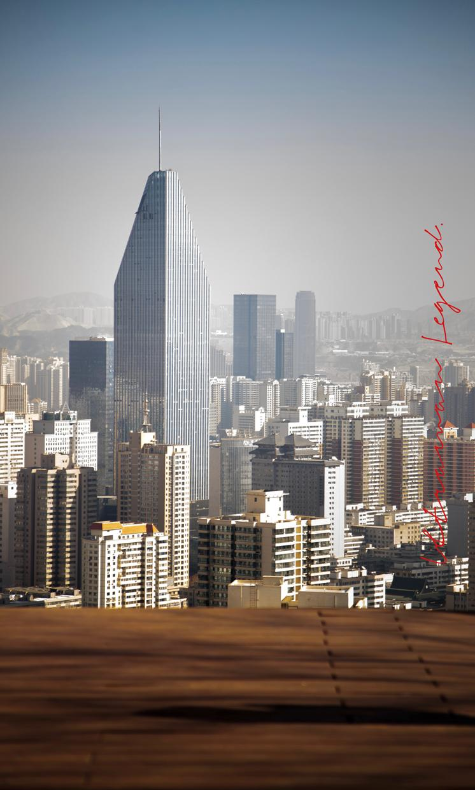
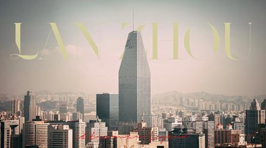
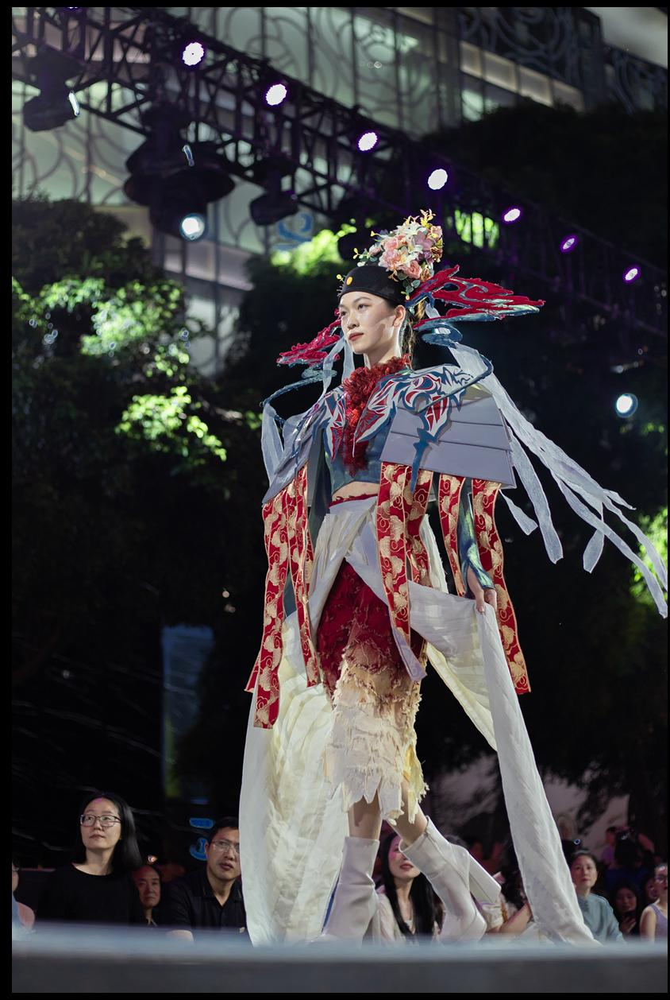
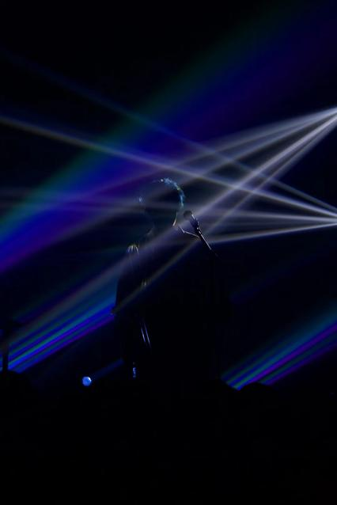
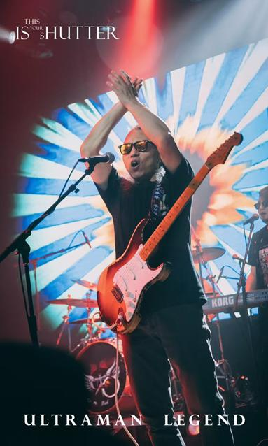
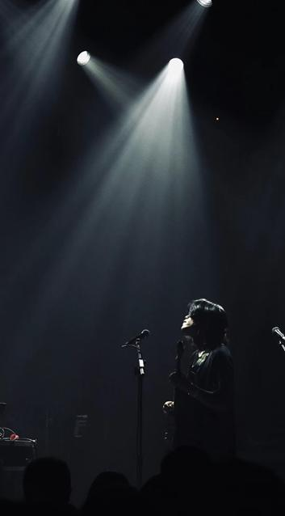
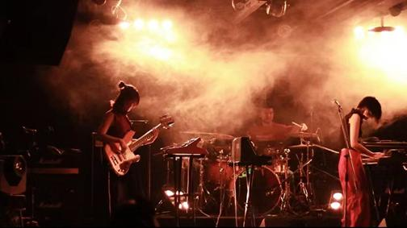
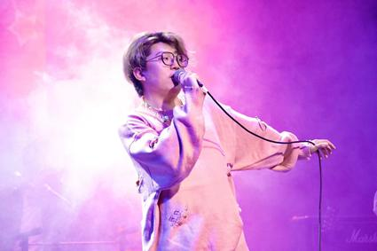
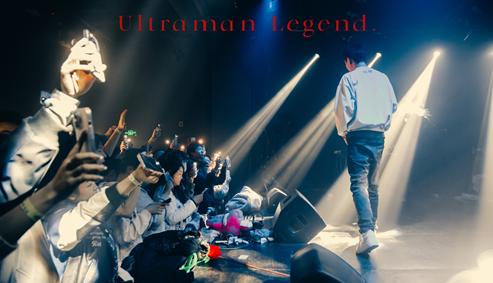
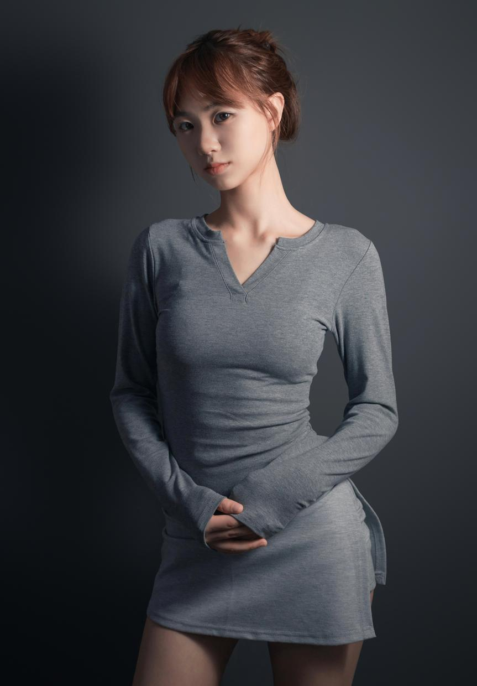
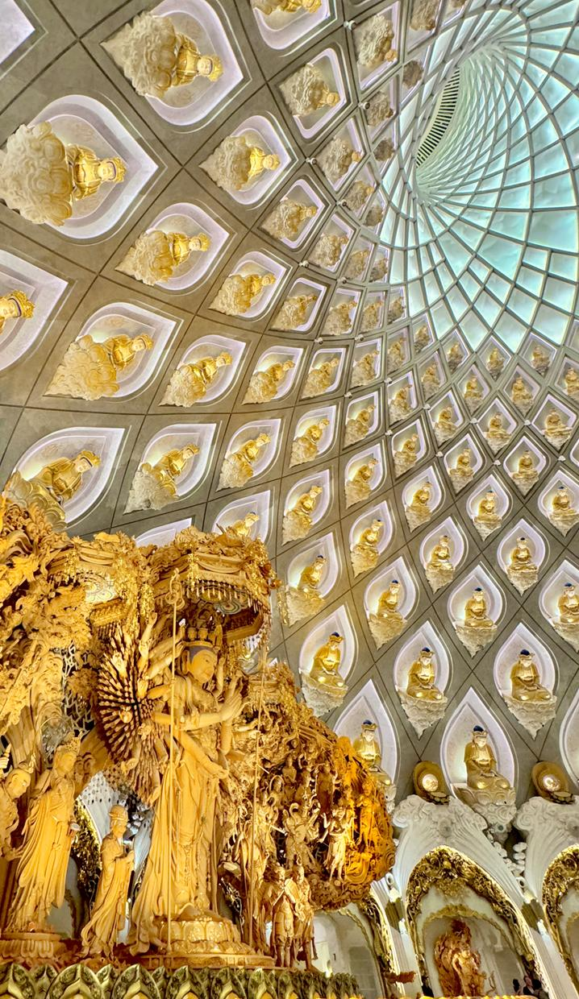
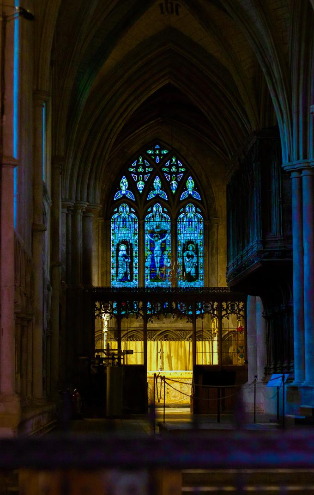
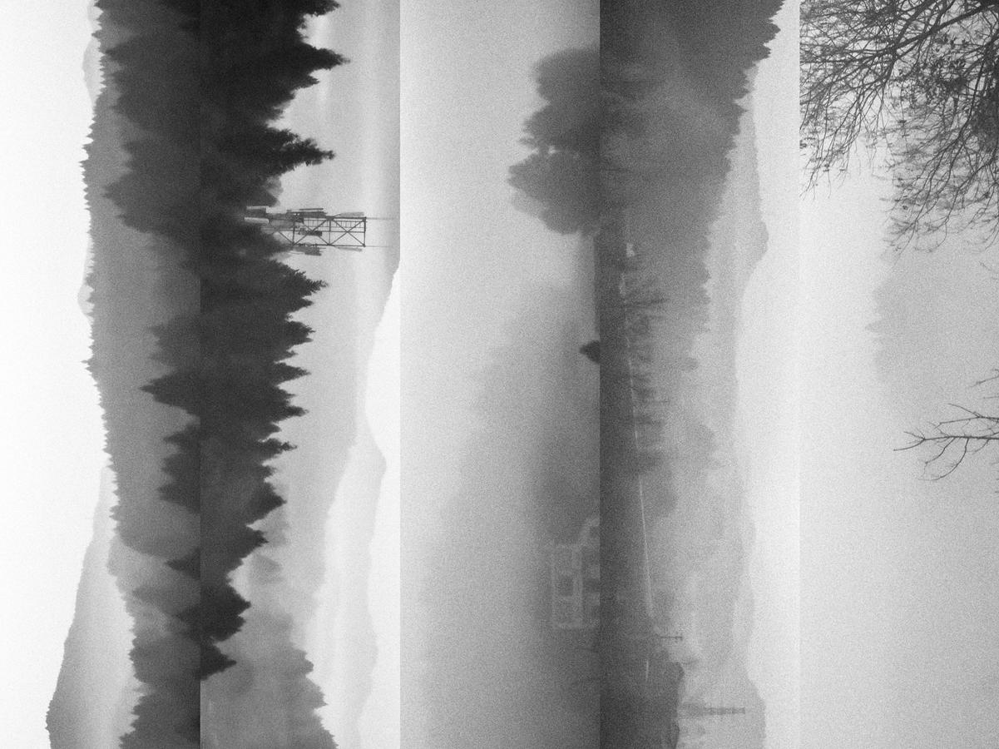
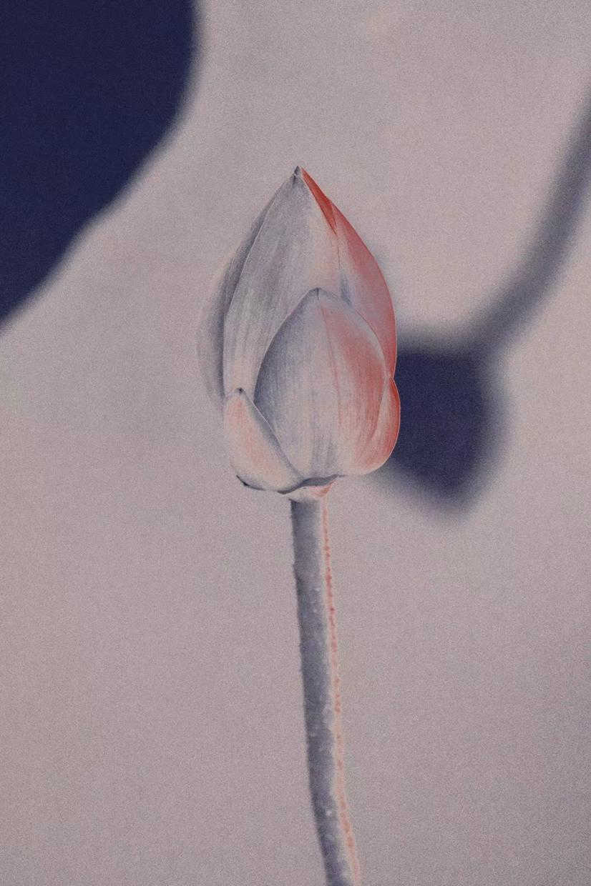
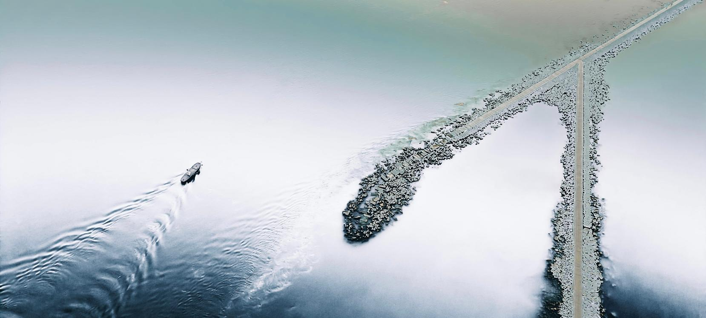
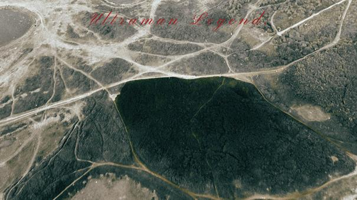
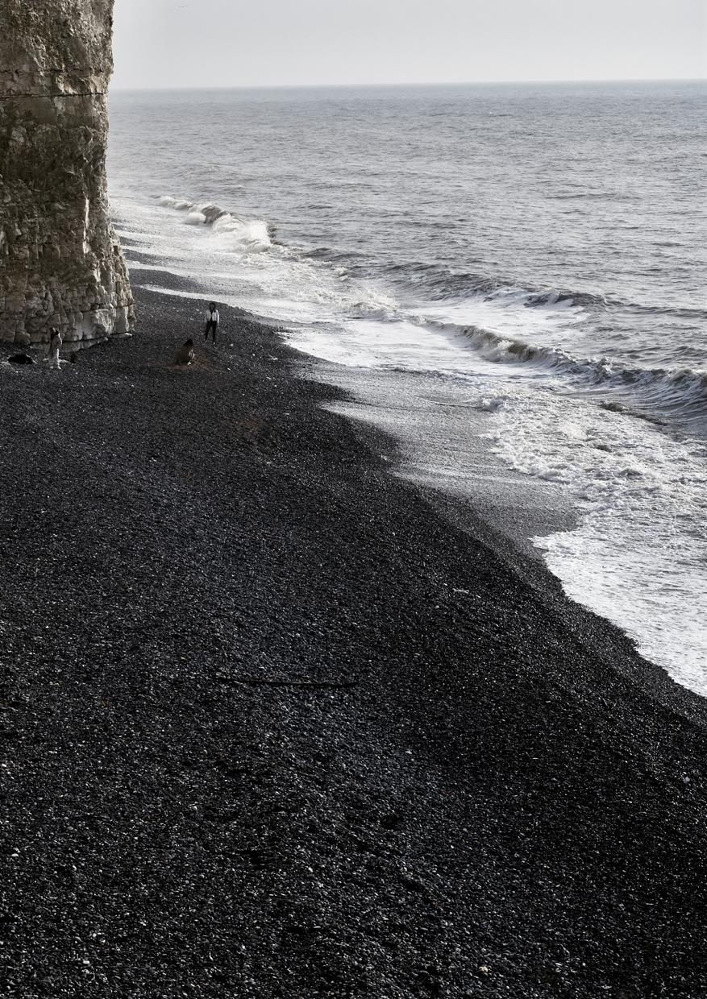
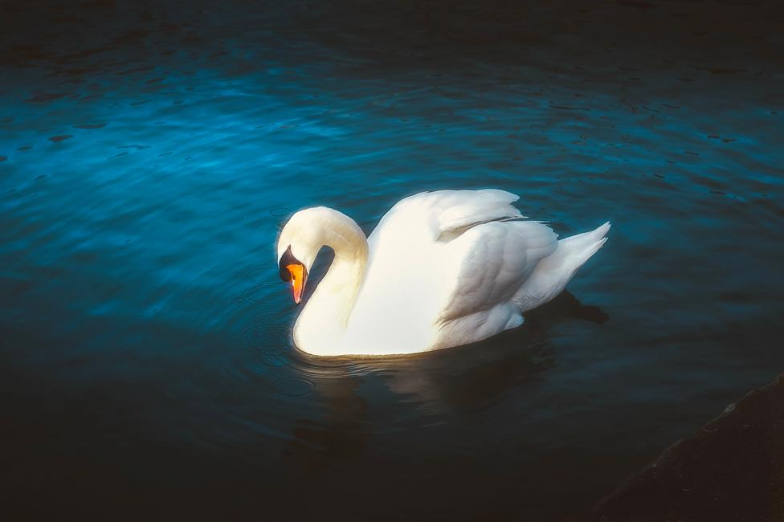
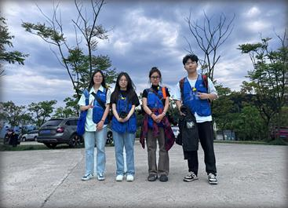
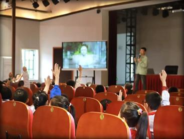
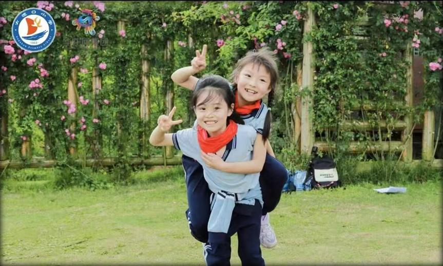
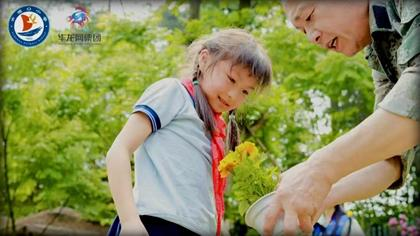